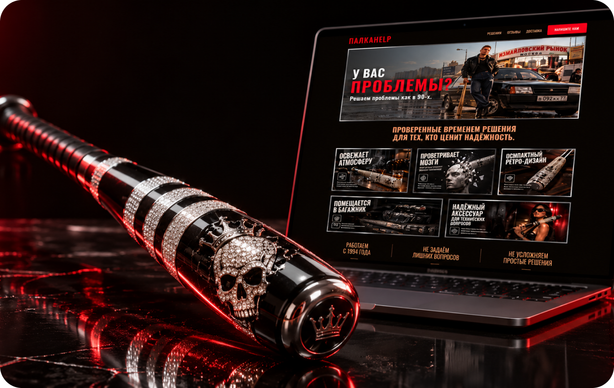
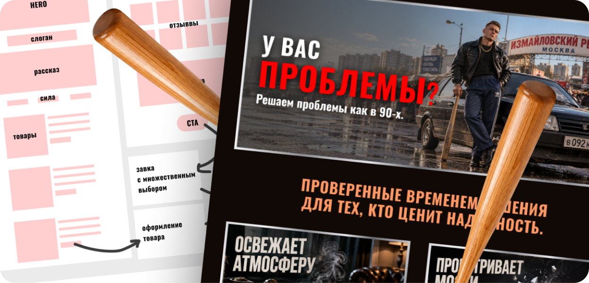
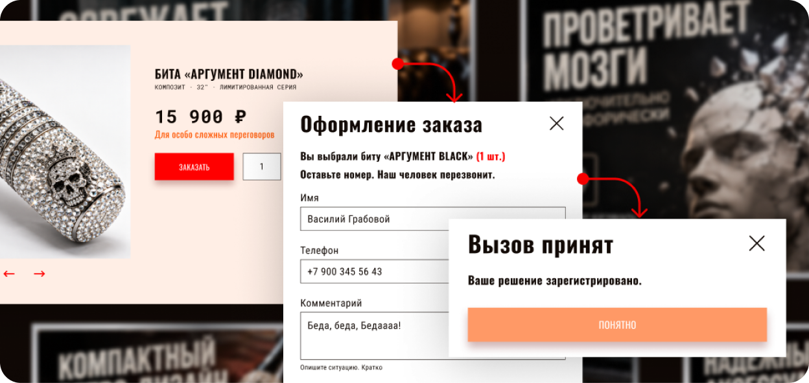
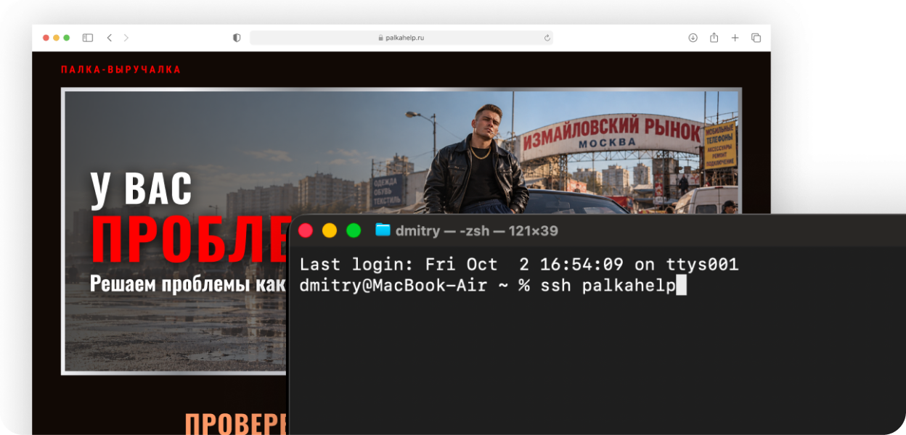
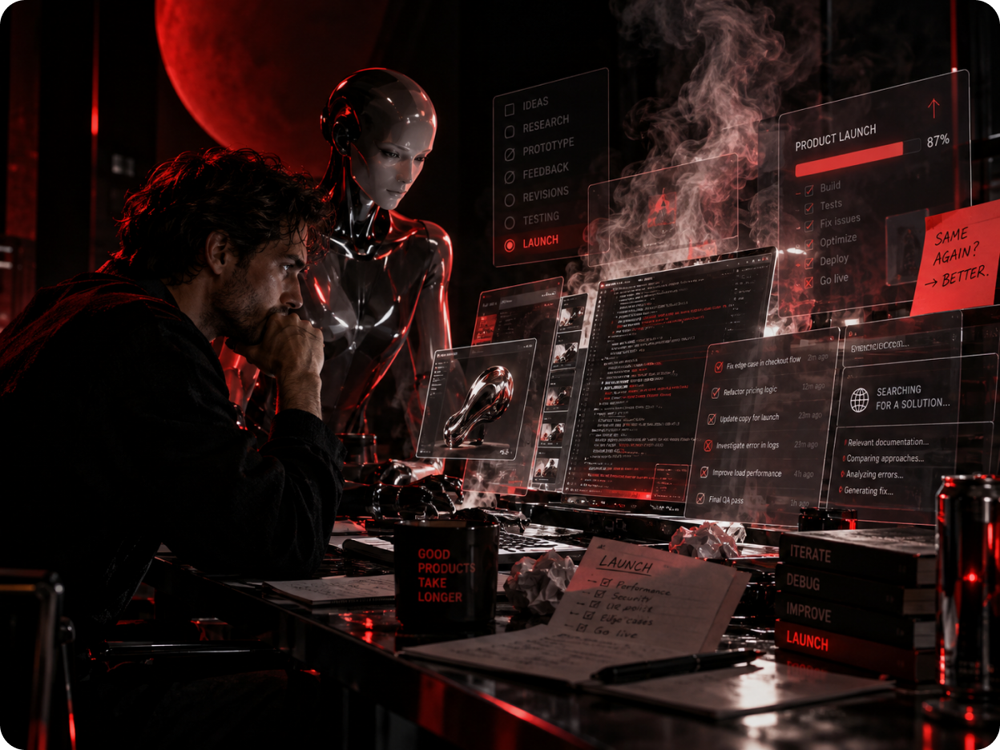
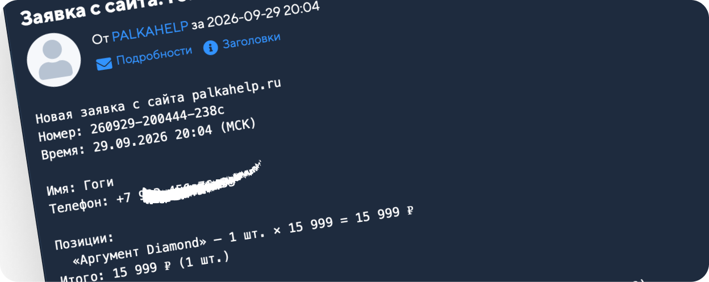

01
Палка-выручалка
Маленький продуктовый эксперимент: от идеи и дизайна до разработки, деплоя и первой реальной заявки.

01
От идеи до работающего продукта
PALKAHELP начался как небольшой эксперимент: хотелось проверить, насколько быстро сегодня можно пройти весь путь от идеи до работающего продукта без большой команды.
Я отвечал за продуктовую логику, UX/UI и визуальную часть, а ИИ использовал как инструмент для разработки, настройки инфраструктуры и запуска.

02
Сначала сценарий, потом интерфейс
Основной сценарий специально сделали максимально коротким: пользователь выбирает бейсбольную биту, указывает количество и сразу переходит к заказу.
От классической корзины отказались — для трёх товаров она только добавляла лишний шаг. В карточке оставили количество и прямой CTA «Заказать», а в форме всегда видно, какой товар выбран.

03
Из Figma — сразу в прод
После дизайна сайт был собран и развернут на собственном сервере: домен, HTTPS, формы, отправка заявок, политика обработки данных и техническая инфраструктура.
Вместо передачи макетов отдельной команде разработки дизайн практически сразу превращался в работающий интерфейс.

04
ИИ как часть рабочего процесса
ИИ использовался не ради отдельной функции продукта, а как рабочий инструмент на всём пути: обсуждение сценариев, проверка решений, генерация вариантов, работа с кодом и деплоем.
Он сильно ускорял работу — но не отменял необходимость самому понимать, что происходит.
В какой-то момент я около четырёх часов пытался объяснить ИИ ошибку в вёрстке. В итоге исправил её сам — и только после этого выяснилось, что всё это время была выбрана не та модель.

05
Запуск
После публикации сайт стал настоящим продуктом: пользователь мог открыть его, выбрать товар, заполнить форму и отправить заказ.
И потом произошло главное. Пришла первая настоящая заявка.
Никаких миллионов пользователей, инвестраунда и графика роста на 480%.
Просто человек нажал кнопку — и весь собранный сценарий отработал от начала до конца.

06
Что получилось
Не стартап. Не единорог. Не концепт на Behance.
Работающий маленький продукт, который прошёл путь от идеи до живого запуска.
Для меня этот эксперимент был важен ещё и потому, что граница между дизайнером и разработкой стала гораздо тоньше: сегодня небольшую продуктовую гипотезу можно не только нарисовать — её можно самому довести до пользователя.